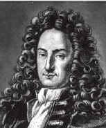

Almanya’nın Leipzig kentinde doğan Gottfried Wilhelm Leibniz (1646-1716), on dört yaşında üniversite öğrenimine başladı ve dikkat çekecek kadar erken bir yaş olan yirmi ikisinde doktorasını tamamladı. Akademisyen olmaktan ziyade Leibniz, farklı zamanlarda kütüphaneci, diplomat, mühendis ve saray memuru olarak çeşitli Alman asilzadelerinin hizmetine girdi. Bu bir dizi meslek, Leibniz’in entelektüel ilgi alanlarının çeşitliliğini gösteriyordu. Felsefe, teoloji ve matematikteki asıl sürekli çalışmasına ek olarak Leibniz, kimya, fizik, mantık, tıp, botanik, optik, tarih, dilbilimi, hukuk ilmi, filoloji ve diplomasiye de önemli katkılar yaptı. Aristoteles’den bu yana hiçbir filozof bilginin bu kadar farklı dallarına bu kadar büyük katkıda bulunmamıştı.

Felsefe alanında Leibniz bir akılcıydı. Bu ilke “yeterli neden” şeklinde ifade edilir. Her doğru önerme için, onun yanlış değil de doğru olmasının bir nedeni vardır.
Çünkü Leibniz her şeyin bir nedeninin olduğuna inandı. Tanrı’nın dünyayı başka türlü değil de bu şekilde yaratmayı seçmesinin bir nedeninin olması gerektiğine inandı. Leibniz, bu neden mevcut dünyanın olası tüm dünyaların en iyisi olması mıdır sorunsalını tartıştı. Leibniz yayımladığı tek kitabı olan - Theodise’da(1710) – bu konu üzerine tartıştı.
Monadoloji adındaki kısa eserinde, Leibniz değişik bir kuram ileri sürdü. Dünyanın monadlar denen sonsuz sayıda nokta büyüklüğünde maddi olmayan şeylerden oluştuğunu önerdi. Zihinlerimiz, monadlardır ama tüm monadların bizim gibi kendi farkındalıkları yoktur. Masalar ve sandalyeler gibi fiziki şeyler monad değildir ve monadlardan oluşmaz. Varolurlar, çünkü monadlar onları algılar; onlar monadların ortak hayalidir. Günümüzde monad kuramının takipçileri çok sayıda değildir.
EK BİLGİLER:
1. Diferansiyel kalkülüs Isaac Newton’ın (1642-1727) keşfi olarak bilinse de, Leibniz de diferansiyel hesabı geliştirmiştir.
2. Leibniz, basit aritmetik yapabilen mekanik bir hesap makinesi icat etti.